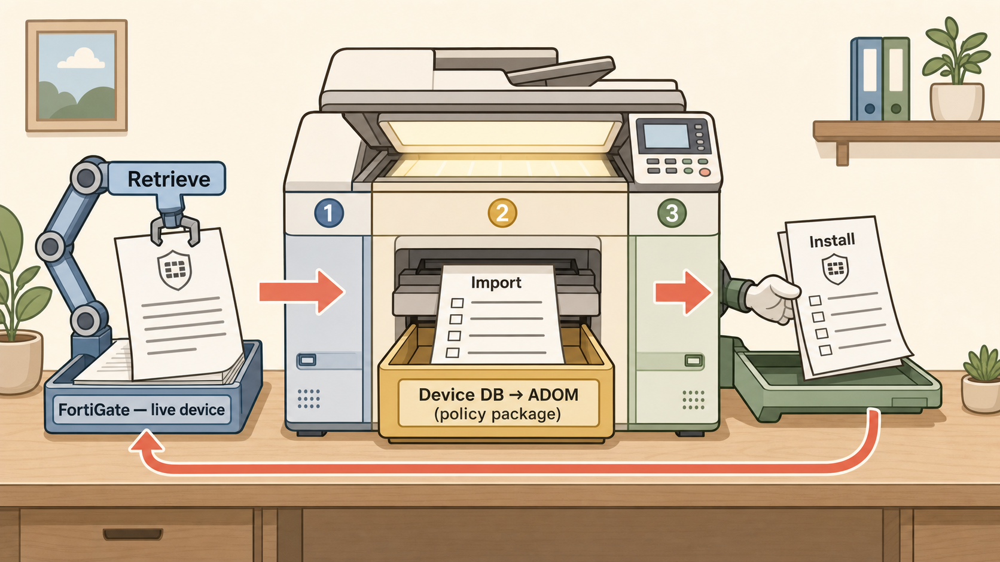
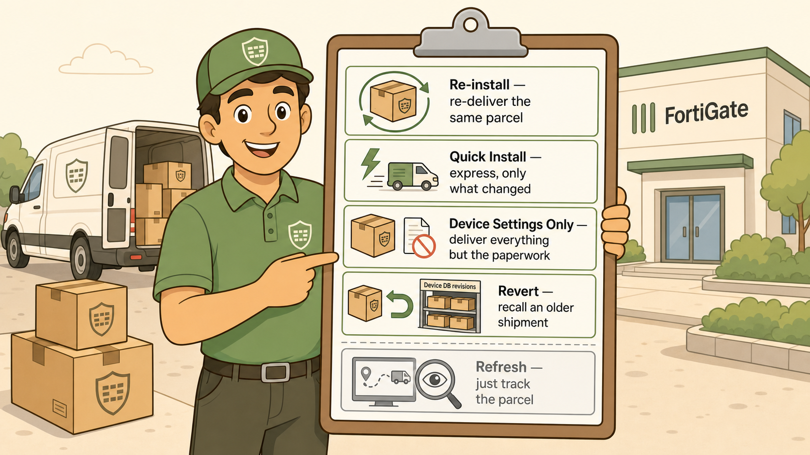

Section 01 · the core pipeline
Retrieve → Import → Install
Think of a photocopier on a desk. You pull the original in, run off a working copy, then hand out the finished version. Three steps, and they run in exactly that order.

The photocopier: original in, working copy made, finished version handed out.
Image not yet generated
images/s1-photocopier-pipeline.png
Flat minimalistic but highly detailed illustrated artwork, modern vector-art aesthetic, warm cream off-white background, clean bold soft-brown line work, no gradients, no photorealism. A friendly office photocopier sits centre-stage on a wooden desk, drawn as a clear three-stage machine reading left to right. STAGE 1 (left, cool blue accents): a mechanical arm labelled "Retrieve" pulls a single large master document — stamped with a FortiGate device icon (a small firewall shield) — INTO the machine from a tray marked "FortiGate — live device". STAGE 2 (centre, muted gold accents): inside the glowing copier bed a fresh sheet emerges labelled "Import", clearly a partial copy showing only rule/policy lines (little checklist rows), dropping into a labelled drawer "Device DB → ADOM (policy package)". STAGE 3 (right, sage-green accents): a finished glossy page labelled "Install" is handed out of an output tray by a small delivery hand, arrow pointing back toward the FortiGate tray to show it going live. Three bold directional arrows connect the stages. Clean sans-serif labels only where listed. Coral accents used sparingly for emphasis on the arrows. Composition: wide, balanced, storybook-clear, generous spacing, front-on slightly isometric view. Do NOT include: dense technical text, real brand logos, glossy 3D rendering, neon, clutter. Learning purpose: encode that the three core verbs form an ordered pipeline moving config from the live device, to a working copy, to a pushed-live version. Aspect ratio 16:9.
1
Retrieve
Pull the original in — the whole config, FortiGate → Device DB.
2
Import
Make the working copy — policies only, Device DB → ADOM.
3
Install
Hand out the finished version — push it live, FortiManager → FortiGate.
Section 02 · the delivery options
Four ways to deliver, one way to check
Once Install means "deliver the parcel," the rest is just a courier's clipboard: re-deliver, express, leave-the-paperwork, recall — and one option that only tracks the parcel without shipping anything.

The courier's clipboard: the five variations are just how you ship — or whether you ship at all.
Image not yet generated
images/s2-courier-clipboard.png
Flat minimalistic but highly detailed illustrated artwork, modern vector-art aesthetic, warm cream off-white background, clean bold soft-brown line work, no gradients, no photorealism. A cheerful delivery courier stands centre holding a large clipboard, facing the viewer, a parcel van and a building marked "FortiGate" softly in the background. The parcel each time is a box stamped with a firewall-shield icon. The clipboard shows FIVE clearly separated delivery-option rows, each with a small icon and short label: ROW 1 "Re-install — re-deliver the same parcel" (icon: circular refresh arrows on a box). ROW 2 "Quick Install — express, only what changed" (icon: lightning bolt, a small van speeding). ROW 3 "Device Settings Only — deliver everything but the paperwork" (icon: a box WITHOUT documents, a crossed-out sheet). ROW 4 "Revert — recall an older shipment" (icon: a backward U-turn arrow returning a box to a warehouse shelf labelled "Device DB revisions"). ROW 5, visually separated by a dividing line and greyed/muted (NOT a delivery — it moves nothing): "Refresh — just track the parcel" (icon: a magnifying glass over a tracking screen / an eye, no box moving). Use sage-green accents for the four real delivery rows and neutral grey for the Refresh row to signal it ships nothing. Muted gold and coral used sparingly for emphasis. Clean sans-serif labels only as listed. Composition: warm, friendly, storybook-clear, generous spacing, the clipboard large and legible. Do NOT include: dense technical text, real brand logos, glossy 3D rendering, neon, clutter. Learning purpose: encode that four verbs are variations of "Install / deliver" while Refresh is the odd one out that only checks status and moves no configuration. Aspect ratio 16:9.
↻
Re-install
Re-deliver the same parcel — install the same package again.
⚡
Quick Install
Express delivery — only what changed, skip the wizard.
▣
Device Settings Only
Deliver everything but the paperwork — settings and routing, no policies.
↺
Revert
Recall an old shipment — rewind the Device DB to an earlier revision.
👁
Refresh
Just track the parcel — check sync status. Moves nothing.
The one that trips people up: Refresh is the only verb here that moves no configuration at all. If a question describes an action that "checks" or "compares" state without pushing anything, it's Refresh.